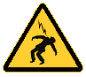
For contact info, please see the Sci.Electronics.Repair FAQ Email Links Page.
Copyright © 1994-2019
All Rights Reserved
Reproduction of this document in whole or in part is permitted if both of the following conditions are satisfied:
1. This notice is included in its entirety at the beginning.
2. There is no charge except to cover the costs of copying.
Should you succeed in constructing and testing this TMS or something similar without killing yourself in the process, the short or long term effects from a device that has not been clinically tested and qualified are not known and cannot be known a-priori. There could be damage to the brain, other internal organs, peripheral nerves, and additional anatomical structures resulting in immediate injury and/or permanent detrimental changes that may only be apparent long after the actual stimulation.
The author makes no claims as to any therapeutic or neurological effects for this device. Use at your own risk. It is presented for information purposes only. Thus the "Shock" graphics don't only relate to electrical shock, but to other effects on brain or other bodily functions from the TMS pulses. Take this seriously.
We will not be responsible for personal injury or worse as well as damage to your ego, destruction of equipment or other property, county-wide power outages, spontaneously generated mini (or larger) black holes, or planetary and stellar disruptions that may result from the use or misuse of this material. Also excluded are effects like premature hair loss or the development of backside pimples twenty years in the future, as well as unanticipated catastrophic consequences of any kind due to errors or omissions in the descriptions or schematics.
ALL high voltage wiring must be double or triple insulated for several thousand volts. This is especially critical for the TMS coil assembly and the high voltage cable to it which has the full capacitor voltage. Multiple indications that the capacitors hold any charge above a few volts should be provided. Interlocks to shut off input power if the cover is removed along with an automatic bleeder to quickly discharge the capacitors are highly desirable. These can be implemented with a normally closed vacuum relay with its coil powered from one of the low DC voltages and its contacts between the input to the current limiting charging resistor and the common (Ground) terminals of the energy storage capacitors. (The schematic below shows the bleeder relay wiring but not the cover interlock switches.)
Read and understand all the precautions in Safety Guidelines for High Voltage and/or Line Powered Equipment. Especially with regard to general work habits around this type of equipment. Don't work alone and make sure the person or persons present know CPR! It has been estimated that the maximum charge on the energy storage capacitor of Ver. 2 (~176 J) is sufficient to electrocute three (3) adult humans even after input power is removed. This may be conservative depending on their original health any number of other factors.
Based on publicly available information (both research literature and manufacturers' specifications), this device is operating at greater than 70 percent of the energy with a similar dB/dt of found in typical commercial TMS systems using air-core figure-8 coils. Tests with one subject (me) show that the motor and sensory thresholds are reached at at less than 40 percent of maximum energy using an optimized coil design modeled loosely on the Magventure/Medtronic B70 butterfly coil. Areas that have been stimulated with an unequivocal response have included the sensory/motor tract and occipital regions of the brain, as well as various peripheral nerves.
Any home-built TMS devices I've found on the Web do NOT appear to have been based on serious science. Their output was either too weak or of an inappropriate pulse shape or duration to have any effect. And the electronics, if more than half-baked, appeared most likely to short out, blow up, or catch fire after one or two shots. However, I have been contacted by someone who has built a working system. He has provided a PDF with the schematics and some photos of the machine and coils. See References and Technical Documents for "Other Credible Home-Built TMS Devices". Only the one so far.
This document describes the implementation of a Trans-Cranial Magnetic Stimulator (TMS) developed based on publicly available scientific literature and TMS manufacturers' technical specifications. Electrical and magnetic performance was simulated using models developed or modified by the author. The prototype was constructed mostly from parts found in the author's junk cabinets and available surplus (mostly eBay). The intent of this effort was never to build a device to treat the various neurological disorders for which TMS is often promoted. It was mostly to prove that it could be done.
And it does work. The pulse energy of Ver. 2 is estimated to be at least 70 percent of that of typical commercial TMS systems from companies like Magventure, though possibly at a slower maximum repetition rate. (That would be remedied in Ver. 4.) The maximum di/dt (rate of change of coil current) and dB/dt (rate of change of magnetic field) are comparable to that of several commercial systems. And it is believed to actually be more capable than some in terms of performance, though perhaps not in spit and finish. :)
If you're not a MAD SCIENTIST type, please just click your browser's "back" button now or take the off-site calming links at the top and bottom of this page, get out of here, and save yourself a lot of potential risk and possible frustration.
But if the idea of a home-built TMS device souunds intriguing, understand that this will likely be a lengthy and challenging project, especially if your parts cabinets are not well stocked. Only consider it if you have had prior experience with high voltage high power electronics. This is not the type of project to be used as an electronics learning experience. Construction must be well thought out and executed with attention to detail. Something that is haphazardly thrown together - even if simply for testing - will probably result in a catastrophe and extreme risk of electrocution. Oversize wire must be used in all the high current areas and their connections are best done with crimp terminals using the proper tool secured with screws or bolts. Insulation for the high voltage section must be overly conservative and there must be warning indicators whenever enough voltage or stored energy is present to be a shock hazard. The coil(s) must be carefully wound, potted to prevent internal movement from the magnetic pulse, and triple insulated. There should be no possibility of contact with the live circuitry even if the operator or user are knocked out of their socks from a TMS pulse. If much of this sounds scary and redundant, it is for your survival.
Note that Ver. 2 was required to evoke a consistent and dramatic cerebral neural response. Ver. 1 produced no confirmed TMS effects, though there could have been something below a conscious level. This is believed to have been primarily due to its low maximum energy despite the other pulse parameters appearing to be adequate. But Ver. 1 was useful for initial construction and testing, and a device with even lower stored energy could be built to further reduce risks during development. Around 40 percent of the maximum energy of Ver. 2 was required to achieve detectable brain stimulation in multiple areas including the sensory-motor cortex and occipital lobes. However, in addition to facilitating the testing of the electronics at slightly less lethal energy, Ver. 1 did provide a rather fabulous massage when used to stimulate various peripheral nerves and could project aluminum rings across the room. :) In fact, Ver. 1 was actually more effective at all of these than the much higher energy of Ver. 2, partly due to the higher pulse rate but possibly also a result of the shorter pulse duration with some coils. So for those applications, Ver. 1 is quite excellent, less stressful (no pun...) on high power electronic components, and slightly less dangerous for testing and troubleshooting.
But the question arises as to why such lethal voltages are required? For example, couldn't something lower like 100 V work just as well? The answers will become clear with the discussion of the tradeoffs involved in the design of the TMS coil to achieve the necessary parameters for effective stimulation including dB/dt, energy, and pulse duration.
And as a side comment, it is exceedingly strange to be able to refer to a homunculus of motor/sensory regions of the brain (see the references), place the coil's sweet spot over that area of the head, and evoke a response that matches the labeling on the diagram. Sort of like the centerfold of a service manual for human beings. :-) And since right and left are swapped between the hemispheres of the brain and the motor/sensory areas it communicates with, pulsing an area on one side the head results in a response on the opposite side of the body. (This also serves as a sort of proof that there is no placebo effect involved.)
Oh, and while some people in the industry have suggested the use of TMS devices for sexual stimulation, a $5 vibrator turns out to be far superior all around. Trust me. ;-)
The following is not intended to be a research paper on TMS but simply a general article for the casually interested or die-hard mad scientist hobbyist experimenter type who would like to construct a TMS device. ;-) Nor is it any more than the barest introduction to TMS. Most of the remainder of this document applies to the specific pulser and coils constructed by the author. The references and/or a search engine may be used to probe further. In addition to scholarly literature, product brochures, manuals, specifications, and more for commercial systems may be found on-line, including general information and tutorials (likely oriented at least partially toward their machines, but still of value). Most can be viewed or downloaded without additional hassle, though some may require registration, which is typically free.
Note: All off-page hyperlinks (except for the escape links) open in a single new tab or window depending on your browser's settings. Most images may be clicked on to view a higher resolution version.
The greatly simplified organization of a typical TMS device is shown below.
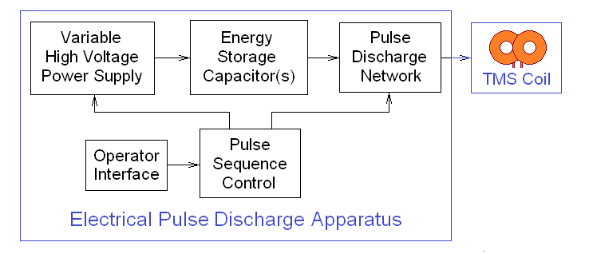
There are two separate sub-systems that need to be optimized to work together:
The electrical parameters of the energy storage capacitor (C) and TMS coil (L) interact so that, for example, increasing C also increases the pulse duration while increasing the number of turns of the TMS coil (to boost the magnetic field) increases L at approximately the square of the number of turns (N) and thus also increases the pulse duration (T0). The relationships of some of the key quatities are shown below:
These are NOT equations for the specific quantity, but rather how it changes as a function of each, variable with all the others held constant regardless of how impossible that might be. So, for example, doubling N quadruples L.
Without an underlying understanding of these requirements, one might be tempted to dump as much charge as possible into an arbitrarily constructed coil and expect a useful result. This will not work. The power supply voltage, energy storage capacitor µF value, and coil inductance and configuration must be traded off in the design to optimize performance in terms of pulse shape and duration, and magnetic field profile. For example, intuitively it may seem that simply doubling the number of turns of wire in the coil will double the peak magnetic field. In reality, at best (ignoring increased resistance) there will be no change in peak magnetic field because the inductance will quadruple and the peak current will be cut in half. In addition, pulse duration (1/f0) will double with the net result that the peak dB/dt will be cut in half as well. Together, the net result will be that the effectiveness of the stimulation will be reduced or eliminated.
Furthermore, the most often used and arguably optimal stimulation waveform is not a simple blip like an impulse function, but something called a "biphasic pulse" - a complete single sinusoid cycle with both positive and negative polarity.
When construction of the author's device was started, these requirements were not understood except in generalities. :( :) The electronic design was based on the availability of a specific large SCR! Only when the circuit worked perfectly but did absolutely nothing beyond giving a quite decent massage via peripheral nerve stimulation, and tossing aluminum rings across the room, was a serious investigation of the literature undertaken. What followed were multiple attempts with various coil designs finally homing in on one (Sam #13) that is similar to a commercial TMS coil. This still did not work even though the pulse duration was optimal and its peak value appeared to be sufficient. At that point the BIG capacitors were called in to boost energy, first by a factor of 3 to 4 (which finally produced an unequivocal neural response), and then for good measure, to the present value of nearly 167 µF (176 J). The final result (up to this point) has pulse parameters similar to those of commercial systems. A third similar capacitor may be available to increase the energy by another 50 percent, which would then put it more than on par with commercial systems. ;-)
For the most part, the electronics turned out to be less challenging than the coil. Aside from difficulties in adding the monophasic pulse type, only very minor changes needed to be made to the electrical design over the course of tests, and then in converting to the higher pulse energy in Ver. 2.
Many coil configurations were constructed in an attempt to optimize the coupling, pulse duration, peak field, and others. In the end, a coil similar to a commercial design won out. And at the higher pulse energy of Ver. 2, it is the only one (so far) that would not experience excessive heating after only a few pulses. It is not known how many, if any, of the earlier designs would even evoke a neural response at the higher energy of Ver. 2. The general saying: "If it ain't broke, don't fix it" applies here, so going back and testing any of the previous coils was not attempted. Even if there was a neural response, they would not be usable due to the power dissipation issues.
The remainder of this article deals mostly with the specifics of the device that was constructed and possible future improvements.
Common to both Ver. 1 and Ver. 2
Ver. 1 specifications
The initial version worked as designed but the energy was insufficient to evoke any response cerebral response through the skull. (It would probably have worked in closer contact with the brain but I wasn't THAT determined to test it....) However, with it's high repetition rate at full energy, it did provide a truly fabulous neck massage and quite decent abdominal workout as well. ;-) Thus Ver. 1 would be perfectly acceptable and recommended for peripheral nerve stimulation using a variety of the air-core coils.
Ver. 2 specifications
Increasing the energy from 26.7 first to around 88 J resulted in an immediate cerebral sensory and motor response, which was further enhanced when the energy was then doubled to almost 176 J. However, due to the longer recharge time of the larger capacitors, the pulse rate near full energy was greatly reduced. While running at a higher repetition rate and lower energy was possible, that never appeared to be as effective for peripheral nerve stimulation as Ver. 1. However, only the Sam #13 coil was used with Ver. 2 so perhaps a different coil would have proven superior for that use. There is more on Ver. 2 below.
The only reason the capacitor voltage rating is so much higher for Ver. 2 is that was what was available. :) Both are a pair of laser pulse discharge capacitors in parallel with an ESR that is so low as to measure 0.00 ohms using my ESR tester.
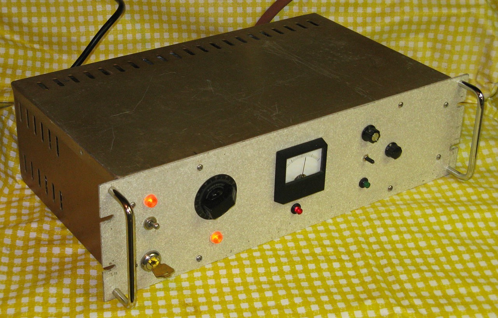
Front View of Complete Unit (Ver. 1)
On the top left is the main power switch and indicator and below that the high voltage keylock switch. The timing circuits are enabled with main power so that the repetition rate can be set. Running without high voltage enabled but with charged capacitors is possible.
The Variac controls the high voltage from 0 to approximately 1450 V on the capacitors. The meter and red LED below it show the charge on the capacitors.
The knob to the right of the analog meter (!!) sets the pulse rate from approximately 1 pulse every 2 seconds to 10 pulses per second. The meter monitors the high voltage and is optimized for transient response. The switch below it selects free run (up), off (middle), single shot fire (down, momentary). When used in this mode, the pulse repeat rate is still limited by the setting of the pulse rate control. The green LED flashes with each pulse.
The knob on the far right selects the pulse type: biphasic (CCW), polyphasic (middle), monophasic (CW, if implemented).
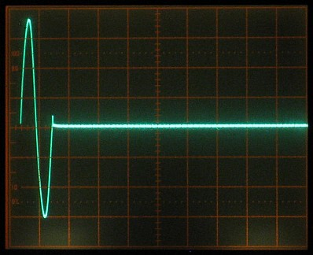
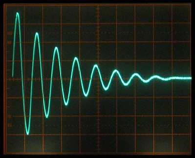
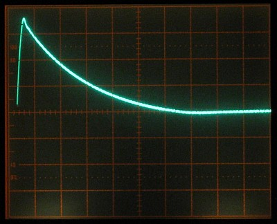
Typical Waveform of Pulse Types: Biphasic, Polyphasic, Monophasic
These waveforms in the photos used a coil with an inductance of approximately 34 µH (Sam #2) with the original (Ver. 1) energy storage capacitors (25.4 µF total) resulting in a frequency of ~6.1 kHz or period of ~164 µs. With Ver. 2 having a capacitance totaling 166.7 µF and a 10.8 µH coil, the resulting frequency is ~3.75 kHz or a period of ~267 µs. But their appearance is similar except that the monophasic has not been implemented in Ver. 2.
The positive half-cycle is through the primary SCR. The negative half-cycle is through its associated parallel diode. The little blip at the end is believed to be due to the reverse recovery time of the primary SCR. (More below.) With another coil of only 10 µH, the damping factor ended up being slightly lower resulting in a more extended decay of its ~10 kHz oscillation.
An Excel spreadsheet for modeling the behavior of the RLC discharge circuit using coil parameters and calculating peak current, peak B-field, B-field a fixed distance from the coil, dB/dt, and more has been developed. If there is serious interest, I can probably be persuaded to email a copy. But there will be no explicit or implicit warranties, and basing the future of the Universe on its calculations might be unwise. ;-)
The behavior of a simplified discharge circuit may be found at PartSim: Pulsar1-2. All the parameters can be easily varied to examine how they change behavior. The default values are close to those for Ver. 2 with Coil #13.
A Javascript program for estimating the magnetic field produced by 1 or 2 coils can be found at Calculator for Off-Axis Fields due to One or Two Coils.
Matlab was also used to model the pulse discharge in more detail.
Here is a summary of the key physical parameters for several commercial figure-8 coils as well as for Sam #13 and #14:
Mfr/Model #Turns ID Mean OD Overlap Wire Size Angle
-------------------------------------------------------------------------------
Magstim 70 mm 9x2 5.2 cm 7.0 cm 8.8 cm 0.0 cm 1x7 mm 0 deg
Medtronic MC-B70 10x2 2.4 cm 6.6 cm 10.8 cm 4.2 cm 3.5 mm (#8) 34.5 deg
MagVenture CoolB70 11x2 2.3 cm 5.95 cm 9.6 cm ?3.6 cm 3x12 mm? 30.0 deg
MagVenture MC-B70 10x2 2.7 cm 6.2 cm 9.7 cm ?3.5 cm 3x6 mm? 30.0 deg
Sam #13 8+9 3.13 cm 5.72 cm 8.26 cm 2.5 cm 2.6 mm (#10) 30.0 deg
Sam #14 10x2 2.9 cm 6.8 cm 10.5 cm 3.4 cm 3.18 mm Tube 30.0 deg
Calculations show that the overlapped configuration to have better localization and a slightly higher peak field and dB/dt for the same inductance with thin "pancake" coils.
See Commercial TMS Figure-8 Coils for detailed specifications of several models based on publicly available data, current as of mid-2016, but the basics haven't changed much since then.
With the value of the energy storage capacitor(s) fixed and resistance minimized (which is generally assumed), this leaves the inductance of the coil as the principle variable used to determine discharge behavior. The total inductance can be calculated fairly accurately based on the physical winding parameters. To maximize the peak field requires a larger number turns but to minimize pulse duration requires a smaller inductance and thus smaller number of turns. So again these are conflicting requirements that need to be reconciled in a successful coil implementation.
As noted above, several programs were used to model discharge behavior for a large number of coil options, as well as at various levels of stored energy and voltage. The Excel spreadsheet was used to compute (among other values): peak discharge current, peak on-axis magnetic field for a single circular coil, field at specified axial distance, dB/dt and induced electric field for this field. Inputs are coil winding parameters, energy storage capacitance, capacitor voltage, and estimates for parasitic inductance and resistance due to circuitry other than the capacitor and coil. The separate Javascript program was developed to compute the off-axis field of two coils with arbitrary separation in 3 dimensions using the coil winding parameters and current as inputs. This is primarily used for the radial field calculation of single and figure-8 coils. Combining these into a single Excel spreadsheet would be possible but was deemed more involved than worthwhile given the need for elliptic integrals for the off-axis field calculation. In fact, simply using the values for the axial field at a specific distance ends up being fairly close for estimating the relevant values at the "sweet spot" of single or figure-8 coils.
Descriptions and photos of all of the author's coil attempts to date may be found at Sam's TMS Coils. Most of them are somewhere between unsuitable and quite laughable for TMS. :( :) However, most of the air-core coils would be useful for peripheral nerve stimulation and probably have other applications. Some of the smaller coils are capable of an impressive dB/dt and have better localization than the large ones.
The final coil constructed to date (called "Sam #13") is a slightly smaller version of a design based on the Medtronics/Magventure B70, which uses a pair of overlapping pancake coils rather than thicker coils sitting side-by-side. Coil winding parameters and biphasic pulse duration were found from the literature and the Magventure Web site. From these, an estimate of the value of the energy storage capacitor(s) in their system could be made. The next coil planned called Sam #14 would be similar, but to be constructed from thick-wall 3.2 mm (0.125") OD copper tubing with an oil-to-air heat exchanger to permit continuous operation at maximum energy and repetition rate. Its completion date is unknown and possibly unknowable. :)
Sam #13 coil specifications
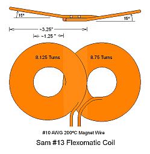
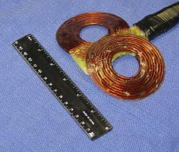
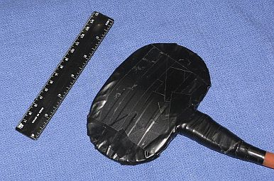
Sam #13 Coil: Design, Before Final Insulation, and Ready for Use
It's not as scary as it looks. Sam #13 was fabricated by first hand-forming the #8 AWG high temperature magnet wire of the two sections of the figure-8 to approximate dimensions. They were then clamped together in a wooden jig via only the center portion along with a 0.02" Fiberglas-Epoxy insulating panel (thin PCB board material) sandwiched between the wire in the overlapped region (visible in the center photo, below) and thin plastic sheets top and bottom to prevent sticking to the wood of the jig. (The photos for Sam #9 at Sam's TMS Coils show a jig similar to the one used in the fabrication of Sam #13.) The wire position and symmetry in each winding could then be fine tuned before filling with two-part Epoxy. After setting, it was removed from the jig, the wings were formed. and the cable wiring was attached. Then a similar 0.02" thick Fiberglas-Epoxy insulating panel cut to be slightly oversize was added underneath and non-acidic RTV Silicone was added for additional insulation, after which another matching Fiberglas-Epoxy insulating panel was placed on top with both formed to hug the coils. The edges were then filled with yet more RTV and Epoxy, covered with 0.001" Kapton tape, and finally the entire assembly was wrapped in multiple layers of black electrical tape.
No, I don't own stock in a company that makes adhesive products. ;-) The extensive filling with Epoxy and RTV is not only for electrical insulation but to make the entire structure essentially monolithic to suppress intra-winding movement which would eventually destroy the wire insulation, as well as to minimize the "woodpecker" sound and vibration resulting from the rapidly changing magnetic field from each TMS pulse.
More on coil-related electronics issues below.
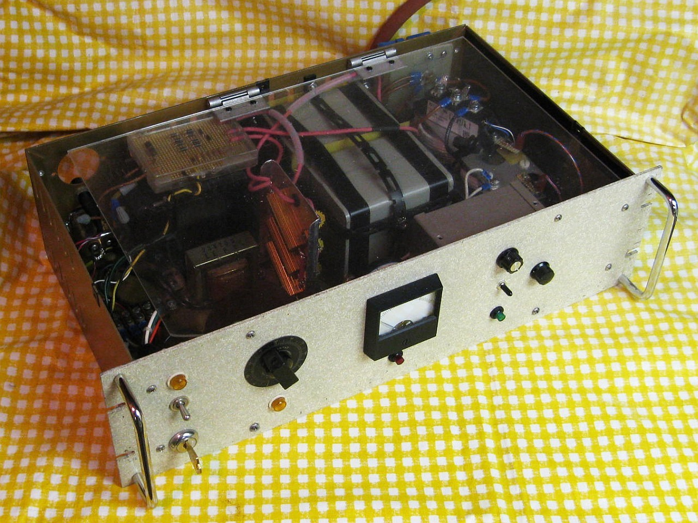
Interior view with Plexiglas Safety Cover in Place (Ver. 1)
The high voltage power supply uses the power transformer from a large 1950s vintage black and white tube-type TV and is controlled by a Variac. :) The transformer has multiple line voltage taps and is set to produce the highest output voltage. The otherwise not very useful 5 V and 6.3 V filament windings are also connected in series with the primary with reverse polarity to further boost the output voltage. The transformer hums a bit at maximum input with the Variac producing 110 percent of line voltage, but doesn't get even detectably warm after a few minutes so it can't be too unhappy with little or no core saturation. Its HV main output goes up to approximately 1,050 VRMS. A bridge rectifier consisting of 4 series pairs of 1N4007 diodes feeds the main energy storage capacitor via a 1.05K ohm 150 W series resistor bank resulting in a maximum voltage on the capacitors of around 1,450 VDC. The resistor bank both limits the current from the transformer and provides isolation during the discharge to maintain a low damping factor.
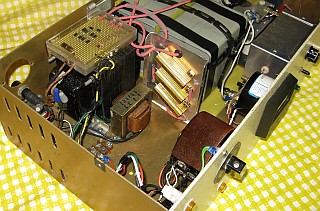
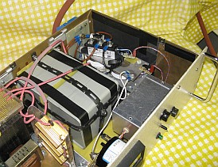
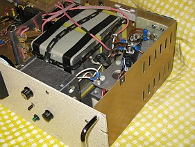
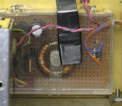
Closeups of: Power Supplies, Energy Storage Capacitors, Pulse Discharge Network, High Side SCR Trigger (Ver. 1)
A voltage divider feeds the meter with a peaking circuit to improve response time. The red HV LED is driven from an emitter follower with an identical LED serving as a voltage regulator to linearize the response. The voltage divider is mounted along with the high voltage bridge inside a plastic box for insulation. The monitor circuits are attached to the back of the meter.
A separate 12 V transformer powers the logic and SCR drivers.
The controller and its power supply are housed in a shielded Minibox. Whether the shielding is really needed is not known, but there was no point in taking chances with multi-kA pulses floating around. :) (Even so, there is often a spurious pulse generated when switching the HV off.) The power supply provides regulated 12 VDC using AC from the small transformer mounted on the chassis. The "logic" consists of a pair of 555 timers. :) The first generates the clock for continuous (approximately 0.5 to 10 pps), or single shot. It's output drives the Pulse LED and the 555 for the SCR trigger with a pulse width determined by Pulse Type: around 50 µs for the biphasic pulse type; 2 ms for the polyphasic and monophasic. These values should work over a wide range of coil inductances.
The main energy storage capacitors (Ver. 1) consisted of a pair of 10 µF (labeled), 1,500 V pulse discharge capacitors in parallel. Their actual capacitance was measured to be 25.4 µF.
Two high current SCRs and a high current diode are used to create the three pulse types. The "hockey puck" style devices visible in the second photo from the left were way over the top for Ver. 1 in terms of what was required with the relatively small energy. :) These are for the main pulse discharge. The ratings of the SCR are not known. It was acquired on eBay for $22 delivered described as an 800 A at 1,800 V unit, but these ratings are suspect, not because it doesn't work based on them, but because the closest datasheet Google has been able to locate shows a dramatically lower voltage rating, and by all rights, it should have blown up at well below the 1,450 V used here. (Happily, I had not seen that datasheet when first building this, basing my decisions on the eBay listing! More below.) The diode is spec'd at 1,500 A and 1,800 V. An SCR in the smaller IXYS unit on top implements the free-wheeling discharge path for the monophasic pulse (Ver. 1 only, removed for Ver. 2.). It is only rated at around 100 A and 1,600 V but for low repetition rate pulses, it should be able to handle 30 times this or more. The same IXYS unit would work for the main discharge except that its turnoff time was found to be way too long to be able to select out only the single cycle for the biphasic. The eBay SCR turned out to be a high speed (inverter) type, so the puck had to be retained.
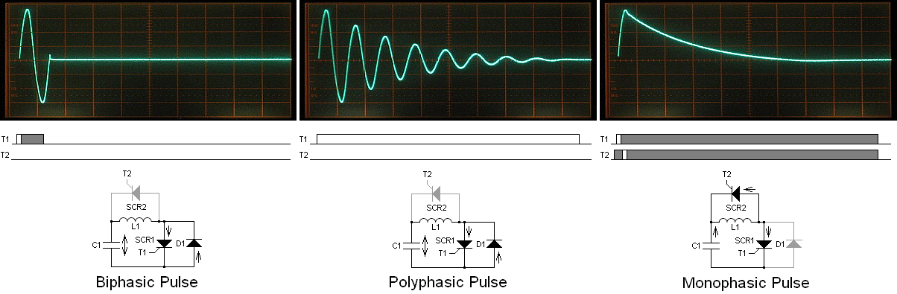
TMS Pulse Generation Timing
The T1 and T2 timing diagrams show drive to the gates of the two SCRs. The high level represents the gate drive being fully on, typically several times the spec'd IGT for the respective SCR. The gray areas denote "don't care" for the pulse level. (Note that to simplify understanding of these diagrams, the labeling of the components does NOT match what's on the full schematic below.)
All three pulse shapes start with the same 1/4 sinewave as shown in the expanded biphasic pulse below. The peak current is thus similar for all. T1 initiates the discharge and must be high long enough to reliably fully turn on SCR1. What happens after that changes for the three pulse types. For the biphasic pulse, T1 must go low at least tq (SCR1) prior to when the voltage across SCR1 (and the current through it and the coil) would go positive again. For the polyphasic, T1 remains high for the entire duration of the decaying sinusoid since SCR1 must be driven into conduction multiple times. But T1 must eventually go low to allow the energy storage capacitors to recharge. For the monophasic, T1 only initiates the discharge and its state doesn't matter after that. T2 must be high at least tgd (SCR2) prior to peak of the sinusoid. And T1 can remain high during the remainder of the monophasic because any current through SCR1 after the peak would increase the voltage on C1. So except perhaps for a couple volts, this simply won't happen because the the easier path is through SCR2. The state of T2 doesn't matter elsewhere during the monophasic, but it must be low for the other pulse types. (In the actual implementation of the monophasic, T1 and T2 are the same as T1 for the polyphasic.)
For SCRs to turn off, either the current through them must go below their holding current (IH) or the voltage across them must go negative. For the biphasic, the voltage reversal assures reliable shutoff of SCR1. This is also true for the polyphasic as long as T1 terminates before the oscillation has died out entirely. For the monophasic, the current being diverted through SCR2 accomplishes this. SCR2 shuts off once the current through it has decayed to below its IH. At that point, the voltage across C1 will be very slightly negative assuring that SCR1 will also shut off as long a T1 is low. (In principle, there could be a peculiar sequence of events whereby SCR1 doesn't shut off properly and there is enough current from the capacitor charger to hold it in conduction since it is not actively isolated discharge network. But this does not appear to have ever occurred during the lifetime of the monophasic's existence in this system.)
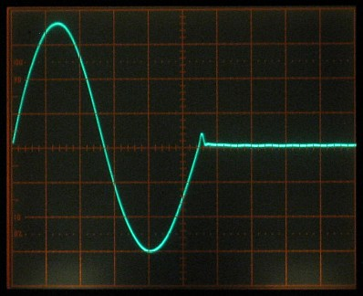
Biphasic Pulse Expanded on Scope Display
That free-wheeling SCR switch for the monophasic pulse turned out to be the most difficult to implement due to the requirement that its gate and cathode swing up to almost +/-1500 V with respect to the circuit common during the discharge. My first attempt using a home-built ferrite pulse transformer lasted about 3 shots due to insulation breakdown. Ferrite is supposed to be an insulator, correct? Nope, at least not this batch of cores at high voltage. A Westcode N490CH20 Hockey Puck SCR rated 2,000 V, 1,200 A average and over 18,000 A pulsed, that is almost 3 inches in diameter weighing in at around 1 pound was originally installed for the free wheeling circuit. It failed shorted when its gate circuit arced through the trigger transformer core. Remarkably, nothing on the low voltage side was damaged. And the primary hockey puck SCR and diode, which were then discharging into basically a dead short. also didn't seem to care. The first replacement switch was a combined SCR/diode block, a IXYS MCD95-16IO1B. While its current rating is about 1/10th that of the unlucky hockey puck, the low repetition pulse rating should easily be enough, hopefully. The companion high current diode was in series with the SCR (mainly because it was available), with a low current diode (a pair of 1N4948s in series) across the SCR so that the full reverse voltage would be taken by the large diode, hopefully reducing the turn-on time of the SCR. The core of the replacement trigger transformer has 2-3 layers of Kapton tape covered with Epoxy for insulation. :)
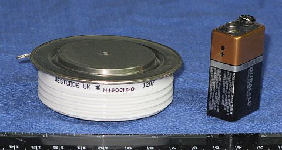
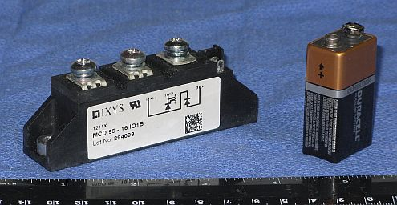
Westcode N490CH20 Hockey Puck SCR and IXYS MCD95-16IO1B
As noted, the IXYS devices was removed from Ver. 2 since (1) because there is little evidence that a monophasic pulse has significant general utility for TMS, and (2) because there would almost certainly be more difficulties associated with it at the much higher peak current.
Other pulse types could be implemented but would require modifications to the pulse discharge network and its control. For example, the "halfsin" (the positive portion of the biphasic) is supported in some commercial systems. This would require replacing D1 with a switch (e.g. SCR) so that it could be disabled. But at the end of the halfsin, the energy storage capacitors would be charged with nearly full reverse polarity. So some fancy footwork might be required before the next pulse. Given that the halfsin is another pulse type that's mostly beneficial to Marketing, there are absolutely no plans to add it. ;-)
Electronics and Coil Interaction
As noted above, various coils have been tested with this machine, most of which proved useless for their intended purpose. See Sam's TMS Coils.
Air-core coils having an inductance from below 8 µH to over 33 µH were found to work with all 3 pulse types. This is rather surprising at the low-end given that the primary SCR needs to recover within 1/2 cycle, which at 8 µH is under 50 µs. Most thyristor specifications don't include a maximum recovery time, and the typical values given are usually 2 or 3 times longer than this. In fact, the IXYS-MCD95-16IO1B was too slow to replace the primary hockey puck SCR and diode, resulting in the biphasic and polyphasic waveforms both being polyphasic. (The mounting and reduced space would have been much more convenient!)
(Coils with an iron core have so far proven to be a disaster either due to core saturation or eddy-current losses resulting in poor damping and/or excessive current. The best case is that the waveforms are terrible or don't change depending on type; worst is that parts blow up. :( :) More below.)
For an air-core coil with an inductance of only 2.5 µH (Ver. 1, 4 or 5 µH total), the biphasic and polyphasic waveforms still worked correctly. This is rather remarkable since a full cycle (biphasic pulse) is under 65 µs or less and most thyristors cannot switch that fast. Detailed specifications of the primary SCR (a GE 387NX198 found on eBay) have not been located, but it must be unusually fast. :) The closest datasheet I can find is for the GE C387 series - which is a high speed 500 A (5,500 A peak) SCR with a typical turnoff time under conditions more extreme than what it's experiencing here of 40 µs. So less than 32.5 µs (required for the 65 µs cycle) seems plausible. But the highest voltage rating listed was only 1,200 V and the "N" version was only 800 V (assuming that's what the "N" in "NX" designates). I find it hard to believe that this thing is working happily at nearly twice that voltage! It's not impossible though - sometimes better devices will be relabeled to satisfy an order for crappier ones. :) Or, perhaps the part numbers have changed since the 1977 (!!) datasheet where the C387 was found. Sorry, I neglected to take a photo of the magic GE SCR before installation. :)
However, although the primary SCR performed perfectly at the low inductance, the free-wheeling SCR self-triggered with a capacitor voltage above about 700 V. (It's only supposed to trigger during the second part of the monophasic pulse.) So, then all three waveforms looked like the monophasic pulse. :( :) (The same thing happened above around 1,400 V with the 10 µH coil.) The cause was an EM transient picked up either in the wiring to the gate of SCR or the driver. Disconnecting the gate drive cable eliminated this spurious triggering, so it wasn't a problem with the SCR itself. Adding a 1 µF capacitor across the SCR gate delayed the onset of the self triggering to a somewhat higher capacitor voltage. Adding a 5 µF capacitor caused the free-wheeling SCR in the IXYS block to make a plit'ting sound and fail shorted, which I assumed at the time to be due to too slow a rise in gate drive current. :( However, one of the screws on the IXYS block was found to be loose when I removed it, so that could have been the cause as well. Lucky these are inexpensive on eBay. ;-) I bought a couple dual SCR units (IXYS MCC95-16) as spares. Since the diodes in the MCD95-16s were still good, there will be 4 spare SCRs and 3 spare diodes just in case. :) (One of the 3 MCDs I bought already had a blown SCR.) In the end, adding a 10 ohm resistor in series with the gate drive seems to have eliminated the false triggering for bare coils. However, it reappeared when driving a coil in a steel yoke, which resulted in a damping factor of almost unity due to induced current in the center piece. That configuration performed poorly in just about every way, as should have been expected, and it has been retired. The bare coil had an inductance of 8 µH and works fine. Perhaps, the peak current was much higher due to the losses, and pickup from that is what was triggering the free-wheeling SCR. When the SCR in a second IXYS MCD95-16 blew while attempting to drive an iron-core coil (either due to core saturation or excessive eddy current losses), I installed a IXYS MCC95-16 using only one of its SCRs without the extra diodes (leaving the other SCR as a spare!), and that works fine. The problem would arise if the SCR shorted resulting in a dead short across the the coil. But since this thing survived that in the past, it shouldn't really matter.
One mystery remains though: The measured time constant of the biphasic pulse and decaying sinusoid is consistent with a damping factor about double what the calculations predict based on the capacitance, coil/cable/wiring resistance, and coil inductance. While there are some losses in the primary SCR and its high current diode, as well as the ballast resistor bank, these shouldn't result in even 10 percent of the observed effect. And yet the decay time for the monophasic pulse is close to the theoretical value. The most likely candidate is the real part of the capacitor ESR. The required resistance of about 0.03 ohms seems high for capacitors of this type but isn't totally out of the question. This would make sense though since the characteristics of the capacitors do not impact the time constant of the monophasic pulse. The specs other than µF and working voltage for the capacitors are unknown. The skin effect of the coil and cable conductors might also contribute a tiny amount. At a frequency of 10 kHz, the skin depth is around 0.66 mm, which is less than one half the diameter of the #14 conductors typically used for the coil (1.63 mm). But this will only increase the effective resistance by a few percent at most.
The complete schematic for both versions is shown below. Specific differences between Ver. 1 and Ver. 2 are noted (specifically relating to the energy storage capacitor and SCRs). Case interlock switches to shut off all power and quickly discharge the energy storage capacitors are NOT shown but are essential for safety during servicing.
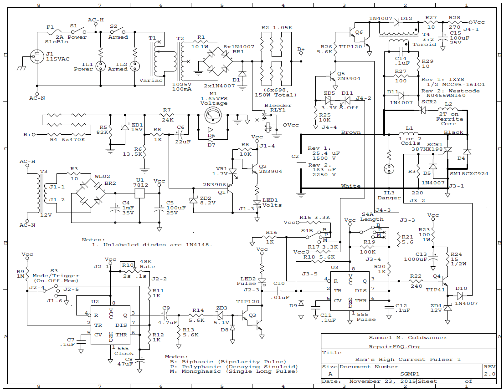
Complete Schematic - Click to View or Download PDF Version
Converting Ver. 1 to Ver. 2 entailed two principle changes:
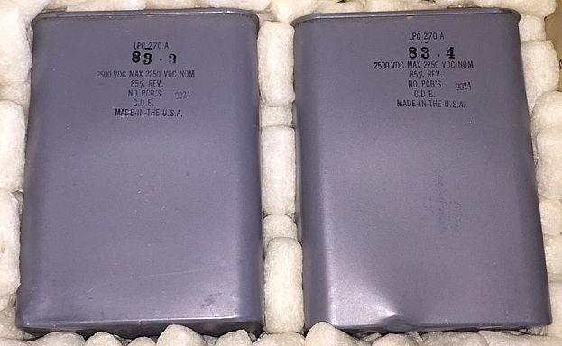
Ver. 2 Energy Storage Capacitors
Interestingly, the damping factor with the larger capacitors is nearly as low as it was before the swap, so the original ones must have had a higher ESR. The ESR of the ~83.5 µF capacitors is almost unmeasurable using my meter - less than 0.01 ohm and much of that may be due to the capacitive reactance at the meter's test frequency, not resistance. The total effective system resistance now appears to be between 30 and 40 milliohms including the coil and cable (about 20 mohm total). And around 50 percent of the energy is recovered with the biphasic pulse.
Of course charge time is longer but so be it - for now. It's still near full energy at 1 pps. Coil heating is becoming more of a problem though. The latest coil (Sam #13) uses #10 wire but at 10 mohms dissipates 20-30 W at 1 pps. So the duration with continuous operation is limited to a few minutes.
The photo below show the modifications. One of the two energy storage capacitors is visible. The other one is under the genuine imitation wood grain plywood cover at the rear. ;-) The higher current SCR for the monophasic has not been installed.
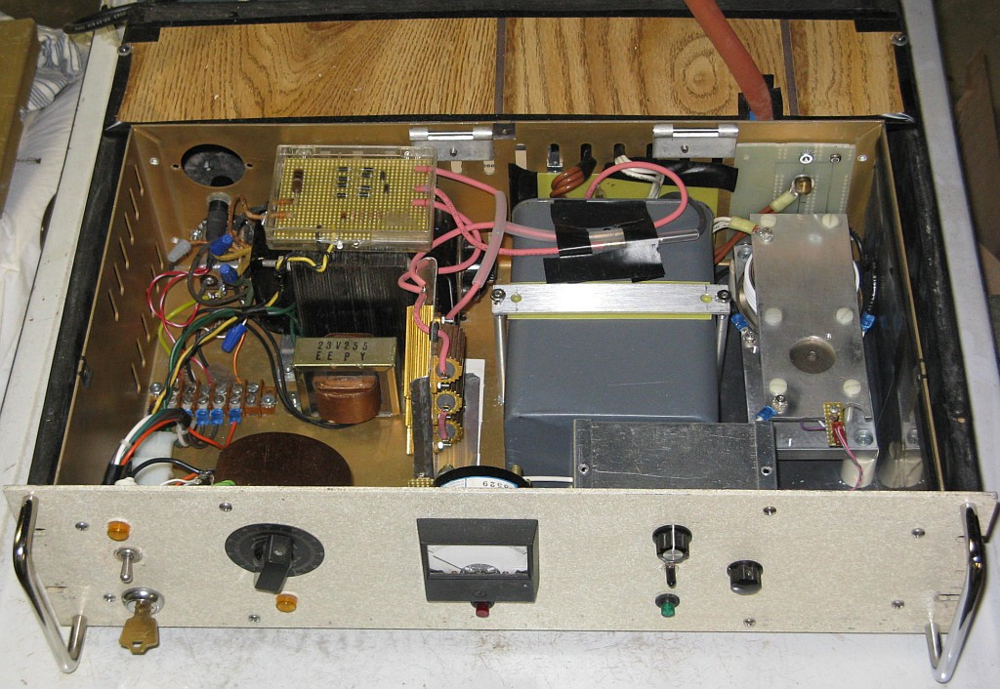
Interior view (Ver. 2)
The next coil (Sam #14) is planned to use 0.125" (3.2 mm) thick-wall copper tubing in place of magnet wire with the two pancakes wired in parallel to reduce inductance and boost dB/dt. A closed-loop cooling system will force transformer oil (to maintain electrical insulation) through the copper tubing and then through an oil-to-air heat exchanger (radiator with cooling fan). Here are the tentative specifications for Ver. 3 assuming other parameters for Ver. 2 are unchanged:
Ver. 2 has been running reliably at up to somewhat over 5,000 A but going higher is something I'd rather not risk with the poor "little" 387NX198 primary SCR assumed to be rated at around 500 A. Repetitive pulsed current ratings of SCRs are rarely given. And while when they are, they tend to be around 30x of the average maximum current (Itavg), there is no data on the 387NX198. SO, I found a couple of these at a bargain price on eBay:
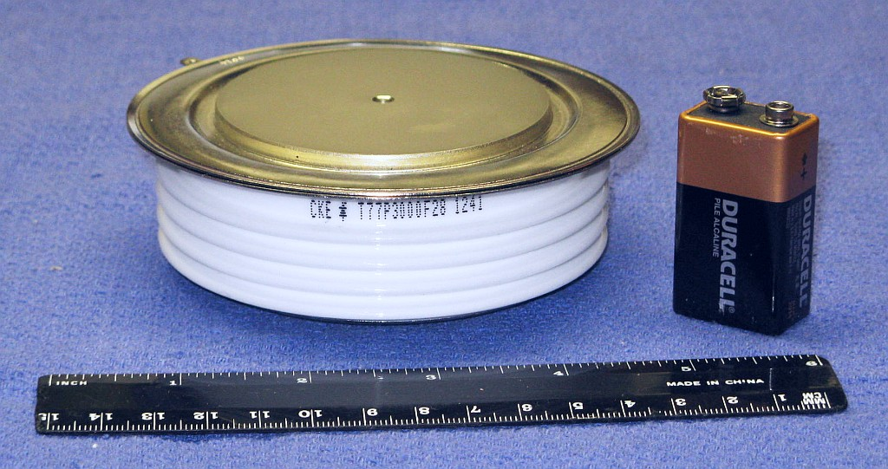
CKE T77P3000F28 Monster High Speed SCR: 2,800 V, 3,000 A, tq=75 µs
The CKE T77P3000F28 is over 4 inches in diameter and weighs around 3-1/2 pounds! :) That's just a wee bit more massive than I had expected.
The target current is around 9,000 A to achieve a full biphasic cycle of 150-160 µs at 1,450 V and ~176 J into an inductance of 3-4 µH.
Perhaps the new SCR should handle anything even I can throw at it, space permitting! :) However, size is not everything. SCRs are at least as likely to die from issues with insufficient gate drive current or too short a drive pulse duration as excessive low duty cycle peak current. If something more reasonable can be found - closer to 1,500 A and 1,500 V with a tq of 75 µs or less - that will be used instead. :) If not, the 387NX198 may be asked to take the risk in the interest of science. :) Based on specifications of the assumed to be similar C387, it may just handle 9,000 A in a short pulse! At least the C387 datasheet does have some data for moderately short pulses, though not quite short enough.
Another less extreme option is to use the Westcode (IXYS) N0465WN160. These are only about 1.5 inches across with a tq of 125 µs, maximum rated voltage of 1,600 V, average current of 465 A, and non-repetitive peak current of 5,000 A.
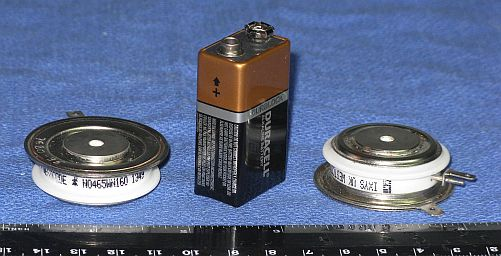
Westcode N0465WN160 Small Hockey Puck SCRs: 1,600 V, 500 A, tq=125 µs
An upgrade to Ver. 3 is probably the only one that has any chance of being implemented, but that is still vanishingly small. All the parts have been procured but the completion date for this project is uncertain but believed to be in the middle of the 314,159th Century. So stay tuned but please be patient. :-)
The existing Ver. 2 capacitors are rated at 2,250 V continuous, so they would be retained, though the third optional one could be added. The wiring in the discharge path might be beefed up for the higher current to maintain a low damping factor and maximize energy recovery for the biphasic.
The expected completion date for Ver. 4 is approaching approximately when the Sun turns into a red giant, and that may be optimistic. ;-)
Adding a micrprocessor would be straightforward, but since both of these objectives really don't add anything to the basic TMS implementation, they are considered low priority. Thus the expected completion date for Ver. 5 is some indeterminant time after glowing purple winged flying pigs have been spotted near here. ;-)
The above are among the "low hanging fruit" in a sense (no pun....) for testing since there should be a detectable effect with even a single pulse. It was never my intent, nor would it have been realistic, to use this device to treat depression or other similar neurological ailments. That would require both training and expertise, as well as a suitable and willing subject, and extended operation at a higher repetition than Ver 2. can provide.
It's definitely spooky to be able to refer to published documentation that precisely matches the internal architecture of my brain that cannot even be seen. Many other cerebral areas remain to be explored that are close enough to the surface of the skull to have a good chance of effective stimulation. Other sensory areas like taste and smell may be possibilities, but effects in many regions of the cerebral cortex will be more subtle requiring specific mental exercises and the like to detect. For example, to disrupt the pronunciation of a word by stimulating the speech area.
Based on this experience, the construction of a functional TMS device from readily available parts is a very achievable project for a determined amateur with general electronics skills and experience with and proper respect for high voltage high energy equipment. One must be mindful of the very real dangers that are present while troubleshooting as well as use, especially if corners have been cut in terms of component ratings, insulation, and assembly technique. In addition, there may be neurological risks during the application of TMS should the effort prove successful.
-- end V1.17a --